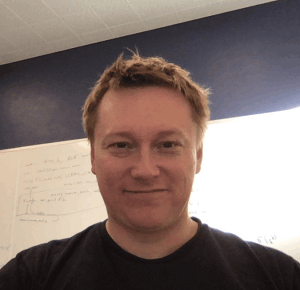

ACL Faculty

I am broadly interested in data-driven cosmology, and I like to combine theoretical modeling with with detailed understanding of cosmological data sets and new statistical techniques. Currently I spend a lot of my research time on combining different cosmological measurements in the Dark Energy Survey, but I also like to think about novel probes, such as cosmic voids and higher-order statistics.
Assistant Professor of Physics

My research focusses on constraining dark energy and modifications to general relativity scenarios through a combination of ground-based surveys and space-based missions. I am deeply involved in the Large Synoptic Survey Telescope (start operations in 2022) and the Wide-Field Infrared Survey Telescope (launch 2025).

I am interested in cosmology in general. I enjoy working with data, and coming up with better ways of exploiting the data coming from today’s best experiments. My work spans gravitational lensing, galaxy clusters, and modeling of large scale structure.